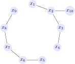

In this section, we'll seek to answer the questions:
What operations can we perform on existing ideals to create new ideals?
How can we describe (non-principal) ideals in general?
Recall that one of the ways in which we understand a mathematical object is to study its relationship to other mathematical objects. In algebra, we learn about a ring by studying its relationship to other rings via functions (introduced in Section 4.2) and to its ideals, introduced in Definition 2.4.1.
The notion of an ideal number was first introduced by Ernst Kummer in the middle of the nineteenth century. Kummer was studying the cyclotomic integers in connection to work on Fermat's Last Theorem and reciprocity laws in number theory, and discovered, to use our modern terminology, that these rings of cyclotomic integers were not UFDs. In particular, he found irreducible cyclotomic integers that were not prime. His work, which was finished by Richard Dedekind by 1871, was to define a new class of complex number, an ideal number for which unique factorization into prime ideal numbers held. A related notion was developed by Kronecker and Lasker, before the two concepts were unified by David Hilbert and Emmy Noether into the more general version which we stated in Definition 2.4.1.
In this section, we explore ways of describing non-principal ideals. We also explore properties of ideals, as well as their connections to other fields of mathematics.
We first explore the behavior of ideals under the usual set-theoretic operations of intersection and union.
Theorem4.1.1.
Let \(R\) be a ring and let \(\set{I_{\alpha}}_{\alpha\in \Gamma}\) be a family of ideals. Then \(I = \bigcap\limits_{\alpha\in \Gamma} I_\alpha\) is an ideal.
Investigation4.1.2.
Let \(R\) be a ring and \(I,J\subseteq R\) be ideals. Must \(I\cup J\) be an ideal of \(R\text{?}\) Give a proof or counterexample of your assertion.
In addition to the set-theoretic properties described above, we can do arithmetic with ideals.
Theorem4.1.3.
Let \(R\) be a ring and \(I,J\subseteq R\) ideals of \(R\text{.}\) Then the sum of \(I\) and \(J\text{,}\)
\begin{equation*}
I+J := \setof{x+y}{x\in I, y\in J},
\end{equation*}
is an ideal of \(R\text{.}\) Furthermore, the product of \(I\) and \(J\text{,}\)
\begin{equation*}
IJ := \setof{x_1 y_1 + x_2 y_2 + \cdots + x_n y_n}{n\ge 1, x_i \in I, y_j\in J}
\end{equation*}
is an ideal of \(R\text{.}\)
When we studied principal ideals, we were able to describe the principal ideal in terms of a single generating element. However, not every ideal is principal (see the Challenge 4.1.9). Still, we would like a way to more precisely describe the elements of such ideals; we begin with Definition 4.1.4.
Definition4.1.4.
Let \(R\) be a commutative ring with identity, and let \(S\subseteq R\) be a subset. Then
\begin{equation}
\langle S \rangle := \bigcap\limits_{\substack{J\supseteq S\\\text{ \(J\) is an ideal } } } J\tag{4.1.1}
\end{equation}
is called the ideal generated by \(S\), and we call \(S\) the generating set for the ideal.
Let \(R\) be a ring. Then \(\ideal{\emptyset} = \set{0}\text{.}\)
One way to interpret Definition 4.1.4 is that \(\ideal{S}\) is the smallest ideal (with respect to subset inclusion) that contains \(S\text{.}\)
Theorem4.1.6.
Given a commutative ring \(R\) and a subset \(S\) of \(R\text{,}\)\(\ideal{S}\) is the smallest ideal containing \(S\) in the sense that, if \(J\) is any ideal of \(R\) containing \(S\text{,}\)\(\ideal{S}\subseteq J\text{.}\)
The concept elucidated by Theorem 4.1.6 is helpful, but does not give us a handle on the structure of the elements of \(\ideal{S}\text{.}\) Such a description is provided by Theorem 4.1.7.
Theorem4.1.7.
Given a commutative ring with identity \(R\) and a nonempty subset \(S\) of \(R\text{:}\)
The set \(I = \setof{r_1 s_1 + r_2 s_2 + \cdots + r_n s_n}{r_i\in R, \ s_j \in S,\ n\ge 1}\) is an ideal of \(R\text{;}\)
\(S\subseteq I\text{;}\) and
\(I = \ideal{S}\text{.}\)
In other words, the ideal \(\ideal{S}\) contains all possible finite “\(R\)-linear combinations” of elements of \(S\text{;}\) that is, it contains all finite sums of products of ring elements with elements from \(S\text{.}\)
Definition4.1.8.
If \(R\) is a ring and \(S = \set{s_1, s_2, \ldots,
s_n}\) is a finite subset of \(R\text{,}\) the ideal \(I\) generated by \(S\) is denoted by \(I = \ideal{s_1, s_2, \ldots,
s_n}\text{,}\) and we say \(I\) is finitely generated.
Consider the ideal \(I = \langle 2, x \rangle\text{.}\)
Note that the set \(S\) in Theorem 4.1.7 need not be finite. However, in many familiar rings, every ideal will have a finite generating set, as the next theorem demonstrates.
Theorem4.1.10.
Let \(R\) be a ring. If \(R\) is Noetherian 1 , then every ideal \(I\) of \(R\) is finitely generated.
Argue that the ideal \(I\) defined in Lemma 4.1.11 is a finitely generated ideal of \(R\text{,}\) and use this to conclude that the ascending chain stabilizes.
As one might expect, not every ring is Noetherian. However, most familiar rings are.
Exploration4.1.13.
Show that the ring \(R = \Q[x_1, x_2, x_3, \ldots]\) of polynomials in infinitely many variables over \(\Q\) is not Noetherian either by exhibiting an ascending chain of ideals that never stabilizes, or an ideal without a finite generating set.
We close with a discussion of a class of ideals which are the object of active mathematical research. Recall that a (simple) graph \(G\) consists of a set \(V = \set{x_1, x_2, \ldots, x_n}\) of vertices together with a collection \(E\) of edges, which are just pairs of vertices and can be written \(x_i x_j\text{.}\) This notation suggests the following definition.
Definition4.1.14.
Let \(K\) be a field, \(G\) a graph on the vertex set \(V = \set{x_1, x_2, \ldots, x_n}\) with edge set \(E\text{,}\) and let \(R = K[x_1, x_2, \ldots, x_n]\) be the ring of polynomials whose variables are the vertices of \(G\) with coefficients in \(K\text{.}\) Define the edge ideal of \(G\) to be
That is, \(I(G)\) is generated by the products of the variables corresponding to the edges of the graph.
Activity4.1.15.
Consider the graph \(G\) in Figure 4.1.16. List the generators of \(I(G)\) and an appropriate ring in which \(I(G)\) may live.

Figure4.1.16.A graph \(G\text{.}\)
As one might hope, we do not make Definition 4.1.14 merely for fun; given a graph \(G\text{,}\) it is possible to relate the graph-theoretic properties of \(G\) (e.g., the chromatic number) with the ideal-theoretic properties of \(I(G)\text{.}\) See [4.1.1] and [4.1.2], among others, for more.